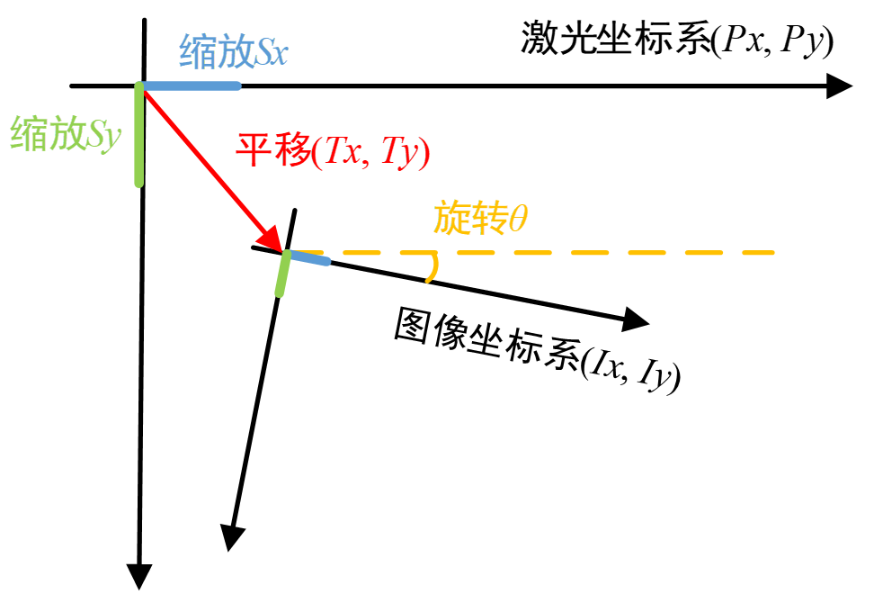
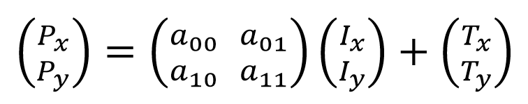
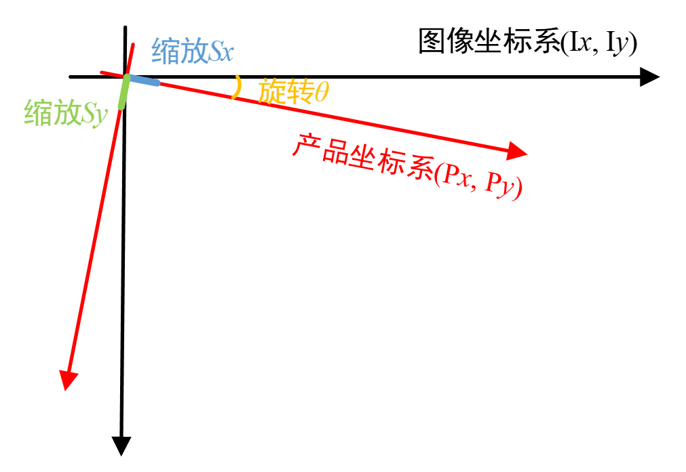
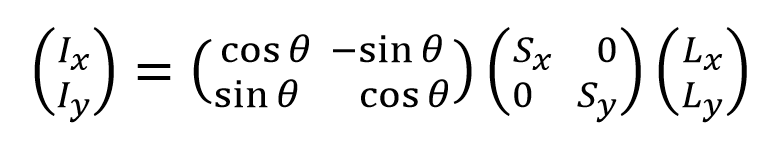
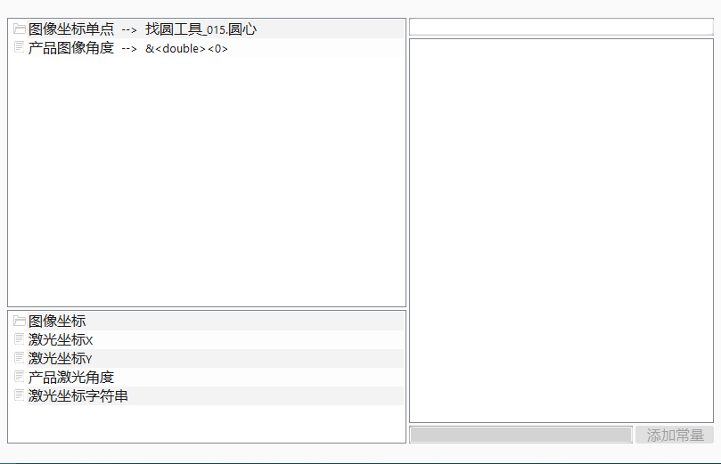
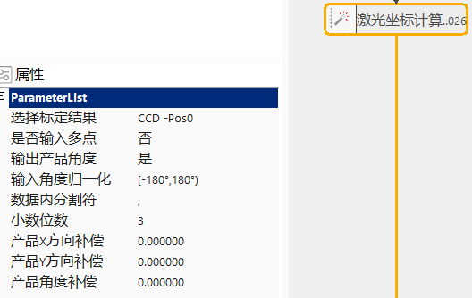
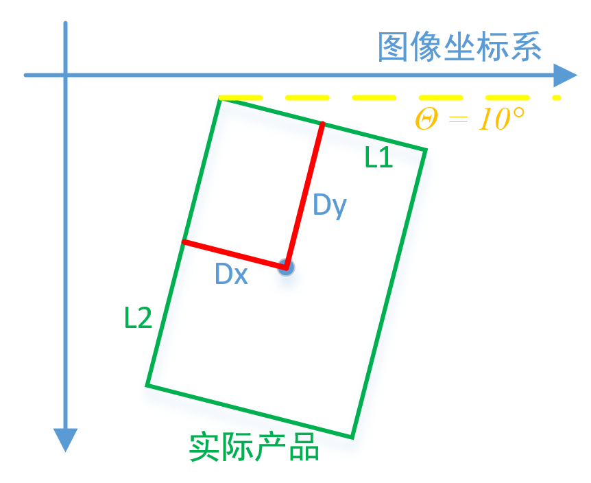
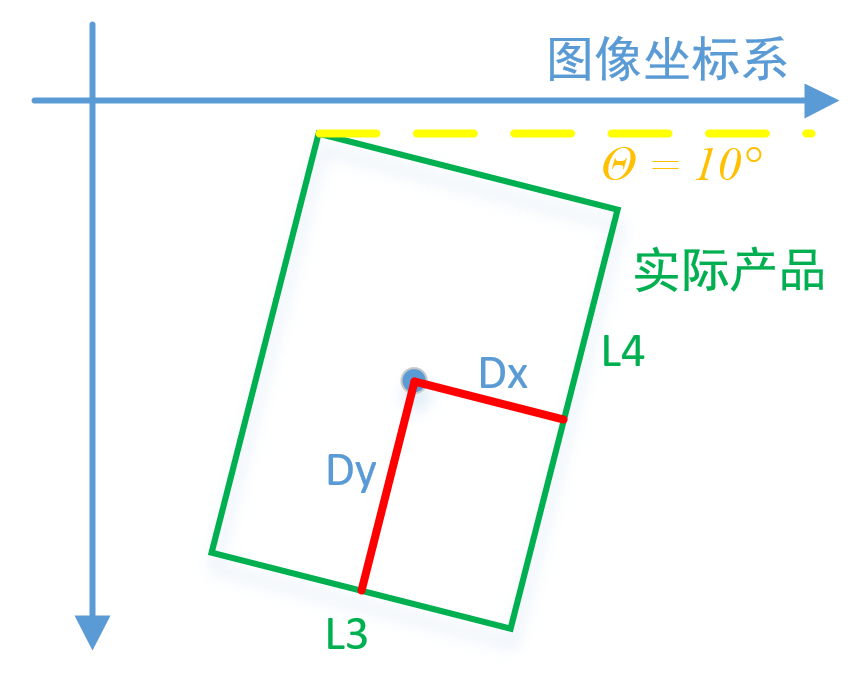

激光坐标计算工具主要利用链接的图像坐标、属性栏的激光标定结果以及补偿值，计算出输入的图像坐标在激光坐标系下对应的坐标值。
在常见的激光切割、激光打标、激光焊接等应用场景中，均可使用此工具将图像坐标系中任意一点/多点转换到激光坐标系中。
由“激光关联标定工具”中的原理描述可知，图像坐标系和激光坐标系会抽象为如图1所示的关系。

其中两个坐标系的转换关系可以由如下公式表示。当完成激光标定计算后，此公式中的转换关系变为已知量，此时根据链接的图像坐标以及选择标定结果，可以计算出对应的激光坐标。

在进行补偿值计算时，使用的坐标系为产品坐标系。如图2所示为产品坐标系和图像坐标系之间的关系图。两个坐标系类型一致（均为左手坐标系），正方向一致（向右向下顺时针），仅存在一个旋转角度和缩放比例关系。

其中两个坐标系的转换关系可以由如下公式表示。根据链接的产品图像角度，可以得到第一个矩阵的参数；根据属性栏选择的激光标定结果，可以得到第二个矩阵的参数。从而此转换关系将产品坐标系下的补偿值转换为图像坐标系下的补偿值，再根据选择的激光标定结果，将图像坐标系下的补偿值，转换到激光坐标系下，从而得到最终的补偿值。

工具的执行流程：配置输入 -> 属性栏参数设置 -> 执行计算。
双击工具，在弹出的窗口中配置输入图像，如图3所示。

点击工具，如图4所示，进行激光坐标计算工具的属性栏参数设置。

当选择“否”时，在参数链中可以链接单点图像坐标，当选择“是”时，在参数链中需要链接图像坐标数组，并且此工具会一次性输出所有点的激光坐标值。
1、当选择“是”，如果为单点，则输出栏有“产品激光角度”；如果为多点，则输出栏的激光坐标类型为vector
2、当选择“否”，如果为单点，则输出栏没有“产品激光角度”；如果为多点，则输出栏的激光坐标类型为vector
此参数不影响激光坐标X和Y的值，仅决定是否在输出结果中显示角度信息。增加此参数的设置，主要是因为激光类应用场景中，有50%左右的项目不需要发送角度信息，为了使用户能够直接使用输出的结果而减少进一步的解析，为用户提供选择，当不需要输出角度信息时，选择否，则输出结果字符串中不包含角度信息，从而使用户能够只有使用此信息。
控制“激光坐标字符串”中每个激光坐标值内部的分隔符，比如激光坐标为【10，10，0.5】，当此分隔符设置为“,”时，则字符串结果为10,10,0.5；当此分割符设置为“;”时，则字符串结果为10;10;0.5。
控制“激光坐标字符串”中每个激光坐标值之间的分隔符，比如激光坐标数组大小为2，分别为【10，10，0.5】【20，20，0.5】，当此分隔符设置为“&”时，则字符串结果为10,10,0.5&20,20,0.5；当此分割符设置为“||”时，则字符串结果为10,10,0.5||20,20,0.5。
控制“激光坐标字符串”中每个激光坐标值转换为字符串时保留的小数位数，范围为[0, 6]。比如此值为3时，激光坐标值【10，10，0.5】转换为字符串的结果为10.000,10.000,0.500。
输出的激光坐标值在产品X方向的补偿，产品坐标系X方向的起始位置和图像坐标系X方向重合，即向右为正。其最终的方向由参数链中的“产品图像角度”确定。
输出的激光坐标值在产品Y方向的补偿，产品坐标系Y方向的起始位置和图像坐标系Y方向重合，即向下为正。其最终的方向由参数链中的“产品图像角度”确定（Y方向由X方向顺时针旋转90°得到）。
输出的激光坐标值在产品D方向的补偿，产品坐标系D方向的起始位置和图像坐标系D方向重合，即顺时针为正。
确认是否配置了正确的数据内分隔符、数据间分隔符、小数位数等控制激光坐标字符串结果的参数，如果设置不正确，可能会导致上位机接收到结果后无法正确的解析。
为了进一步明确补偿时的使用方式，下面以实际应用场景为例，对产品产品坐标系进行说明。


| 参数名称 | 参数描述 |
|---|---|
| 选择标定结果 | 选择激光标定管理中已经标定结果 |
| 是否输入多点 | 控制此工具进行单点/数组计算 |
| 输出产品角度 | 选择是则输出激光位置姿态数据。 |
| 输入角度归一化 | 将输入的角度归一化，取值为[-90°,90°)、[-180°,180°)、[0°,180°)、[0°,360°)；比如归一化到-90~90°之间，输入的是92°，内部计算的时候会变成-88°。 |
| 数据内分隔符 | 控制“激光坐标字符串”中每个激光坐标值内部的分隔符 |
| 数据间分隔符 | 控制“激光坐标字符串”中每个激光坐标值之间的分隔符 |
| 小数位数 | 控制“激光坐标字符串”中每个激光坐标值转换为字符串时保留的小数位数，范围为[0, 6] |
| 是否基于图像坐标系补偿 | 标识当前的补偿方式是基于图像坐标系还是基于激光坐标系。如果基于图像坐标系，则补偿值的正方向为向右向下；如果不基于图像坐标系，则需要用户手动设置补偿值轴方向，参考X轴方向和Y轴方向两个参数。 |
| X轴方向 | 补偿值计算时的X轴正方向，0表示向右为正，非0表示向左为正，仅在是否基于图像坐标系补偿为否时启用 |
| X轴方向 | 补偿值计算时的Y轴正方向，0表示向下为正，非0表示向上为正，仅在是否基于图像坐标系补偿为否时启用 |
| X方向补偿 | 输出的激光坐标值在产品X方向的补偿，产品坐标系X方向的起始位置和图像坐标系X方向重合，即向右为正 |
| Y方向补偿 | 输出的激光坐标值在产品Y方向的补偿，产品坐标系Y方向的起始位置和图像坐标系Y方向重合，即向下为正 |
| 角度补偿 | 输出的激光坐标值在产品D方向的补偿，产品坐标系D方向的起始位置和图像坐标系D方向重合，即顺时针为正 |
| 图像坐标单点 | 待计算的图像单点 |
| 图像坐标数组 | 待计算的图像点数组 |
| 产品图像角度 | 产品X方向的图像角度 |
| 参数名称 | 参数描述 |
|---|---|
| 图像坐标 | 用于计算的图像点数组 |
| 激光坐标X | 单点计算时，输出的激光坐标X，类型为double |
| 激光坐标Y | 单点计算时，输出的激光坐标Y，类型为double |
| 激光坐标D | 单点计算时，输出的激光坐标D，类型为double |
| 激光坐标 | 多点计算时，输出的激光坐标数组，类型为数组 |
| 激光坐标字符串 | 按照属性栏设置的相关参数，输出的激光坐标字符串结果 |
| 执行结果 | 工具执行结果。 |
| 执行时间 | 工具执行时间。 |
参见“\Samples\激光坐标计算工具.gvp”。